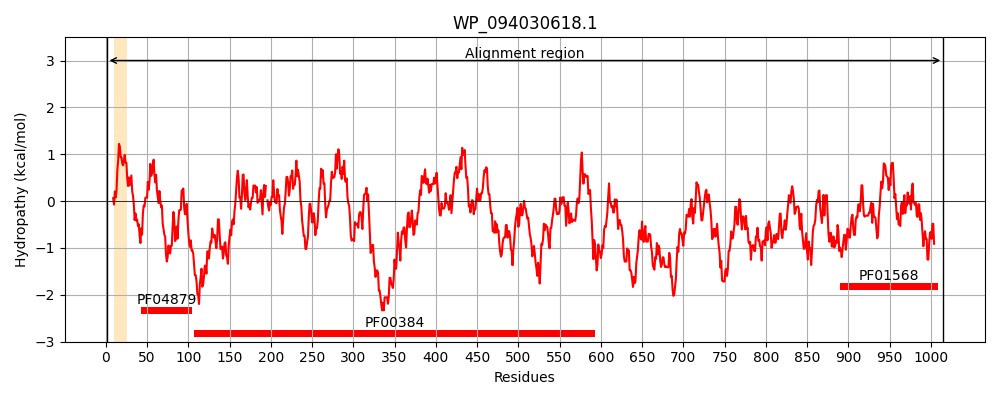
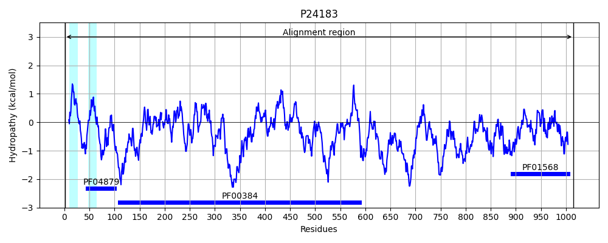
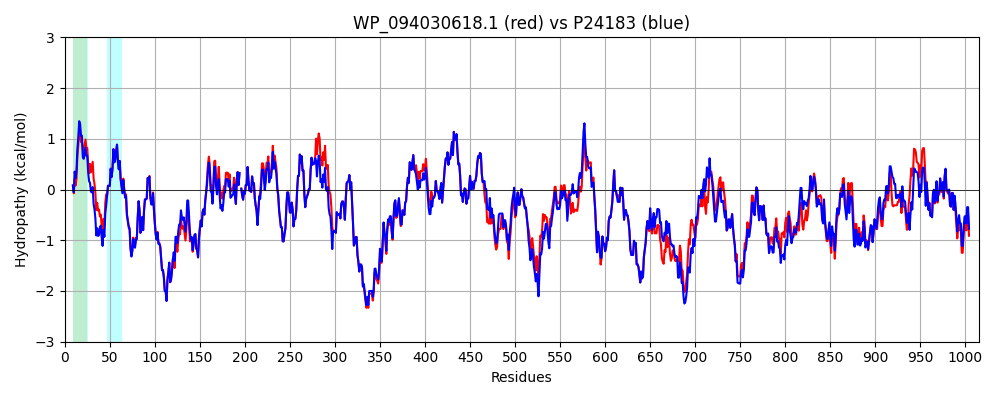

Hit Accession: P24183
Hit TCID: 5.A.3.2.1
Hit Description: gnl|BL_ORD_ID|9490 gnl|TC-DB|P24183|5.A.3.2.1 Formate dehydrogenase, nitrate-inducible, major subunit (EC 1.2.1.2) (Formate dehydrogenase-N alpha subunit) (FDH-N alpha subunit) (Anaerobic formate dehydrogenase major subunit) - Escherichia coli.
Mach Len: 1015
e:0.000000
Query TMS Count : 1
Hit TMS Count: 2
TMS-Overlap Score: 0.850000
Predicted Substrates:CHEBI:10545;electron
BLAST Alignment:
Score: 5027 , Bit scores: 1941 bits, E-value: 0.0e+00, Alignment length: 1015, Percentage identity: 91
Query: 1 MDVSRRKFFKICAGGMAGTTAAALGFAPKMALAQARNFKLLRAKEIRNTCTYCSVGCGLLMYSLGDGAKNAKEAIYHIEGDPDHPVSRGALCPKGAGLLDYVHSENRLRYPQYRAPGSDKWQRISWDEAFNRIARLMKADRDANFIEKNEQGVTVNRWLSTGMLCASAASNETGMLTQKFVRSLGMLAVDNQARVUHGPTVASLAPTFGRGAMTNHWVDIKNANVVVVMGGNAAEAHPVGFRWAMEAKNNNDATLIVVDPRFTRTASVADIYAPIRSGTDITFLSGVLLYLIENNKINAEYVKHYTNASLLVRDDFAFEEGLFSGYDAEKRQYDKSSWNYQFDENGYAKRDKTLSHPRCVWNLLRQHVSRYTPEVVENICGTPKADFLKVCEVLASTSAADRTTTFLYALGWTQHTVGAQNIRTMAMIQLLLGNMGMAGGGVNALRGHSNIQGLTDLGLLSTSLPGYLTLPSDKQSDLQSYLSANTPKATLPDQVNYWSNYPKFFVSLMKSFYGEAAQKENDWGFNWLPKWDQAYDVIKYFNMMDNGNVTGYICQGFNPVASFPDKNKVVRSLSKLKYLVVIDPLVTETSTFWQNHGESNDVDPSAIQTEVFRLPSTCFAEEDGSIANSGRWLQWHWKGQDAPGEARNDGEILAGIYHRLRELYRREGGKGAEPLLKMSWRYKQPDHPESAEVAKENNGYALADLYDQNGALLAKKGQLLNSFALLRDDGSTASSCWIYTGSWTEQGNQMANRDNADPSGLGNTLGWAWAWPLNRRVLYNRASADINGKPWDAKRMLIQWNGSKWVGNDIPDFNTAPPGSNTGPFIMQQEGLGRLFALDKLAEGPFPEHYEPMETPLGTNPLHPKVVSSPVVRLYEEDAIRLGKKDKFPYVGTTYRLTEHFHTWTKHALLNSIAQPEQFVEISEGLAKSKGIANGDWVKVSSKRGFICAVAVVTRRLRTLNVNGQQVETVGIPLHWGFEGVARKGYIANTLTPNVGDSNSQTPEYKAFLVNIEKA 1015
MDVSRR+FFKICAGGMAGTT AALGFAPK ALAQARN+KLLRAKEIRNTCTYCSVGCGLLMYSLGDGAKNA+EAIYHIEGDPDHPVSRGALCPKGAGLLDYV+SENRLRYP+YRAPGSDKWQRISW+EAF+RIA+LMKADRDANFIEKNEQGVTVNRWLSTGMLCAS ASNETGMLTQKF RSLGMLAVDNQARVUHGPTVASLAPTFGRGAMTNHWVDIKNANVV+VMGGNAAEAHPVGFRWAMEAKNNNDATLIVVDPRFTRTASVADIYAPIRSGTDITFLSGVL YLIENNKINAEYVKHYTNASLLVRDDFAFE+GLFSGYDAEKRQYDKSSWNYQ DENGYAKRD+TL+HPRCVWNLL++HVSRYTP+VVENICGTPKADFLKVCEVLASTSA DRTTTFLYALGWTQHTVGAQNIRTMAMIQLLLGNMGMAGGGVNALRGHSNIQGLTDLGLLSTSLPGYLTLPS+KQ DLQSYL ANTPKATL DQVNYWSNYPKFFVSLMKSFYG+AAQKEN+WG++WLPKWDQ YDVIKYFNMMD G VTGY CQGFNPVASFPDKNKVV LSKLKY+VVIDPLVTETSTFWQNHGESNDVDP++IQTEVFRLPSTCFAEEDGSIANSGRWLQWHWKGQDAPGEARNDGEILAGIYH LRELY+ EGGKG EPL+KMSW YKQP P+S EVAKENNGYAL DLYD NG L+AKKGQLL+SFA LRDDG+TASSCWIYTGSWTEQGNQMANRDN+DPSGLGNTLGWAWAWPLNRRVLYNRASADINGKPWD KRMLIQWNGSKW GNDIPDF A PG+ TGPFIMQ EG+GRLFA++K+AEGPFPEHYEP+ETPLGTNPLHP VVS+PVVRLYE+DA+R+GKK++FPYVGTTYRLTEHFHTWTKHALLN+IAQPEQFVEISE LA +KGI NGD V VSSKRGFI AVAVVTRRL+ LNVNGQQVETVGIP+HWGFEGVARKGYIANTLTPNVGD+NSQTPEYKAFLVNIEKA
Sbjct: 1 MDVSRRQFFKICAGGMAGTTVAALGFAPKQALAQARNYKLLRAKEIRNTCTYCSVGCGLLMYSLGDGAKNAREAIYHIEGDPDHPVSRGALCPKGAGLLDYVNSENRLRYPEYRAPGSDKWQRISWEEAFSRIAKLMKADRDANFIEKNEQGVTVNRWLSTGMLCASGASNETGMLTQKFARSLGMLAVDNQARVUHGPTVASLAPTFGRGAMTNHWVDIKNANVVMVMGGNAAEAHPVGFRWAMEAKNNNDATLIVVDPRFTRTASVADIYAPIRSGTDITFLSGVLRYLIENNKINAEYVKHYTNASLLVRDDFAFEDGLFSGYDAEKRQYDKSSWNYQLDENGYAKRDETLTHPRCVWNLLKEHVSRYTPDVVENICGTPKADFLKVCEVLASTSAPDRTTTFLYALGWTQHTVGAQNIRTMAMIQLLLGNMGMAGGGVNALRGHSNIQGLTDLGLLSTSLPGYLTLPSEKQVDLQSYLEANTPKATLADQVNYWSNYPKFFVSLMKSFYGDAAQKENNWGYDWLPKWDQTYDVIKYFNMMDEGKVTGYFCQGFNPVASFPDKNKVVSCLSKLKYMVVIDPLVTETSTFWQNHGESNDVDPASIQTEVFRLPSTCFAEEDGSIANSGRWLQWHWKGQDAPGEARNDGEILAGIYHHLRELYQSEGGKGVEPLMKMSWNYKQPHEPQSDEVAKENNGYALEDLYDANGVLIAKKGQLLSSFAHLRDDGTTASSCWIYTGSWTEQGNQMANRDNSDPSGLGNTLGWAWAWPLNRRVLYNRASADINGKPWDPKRMLIQWNGSKWTGNDIPDFGNAAPGTPTGPFIMQPEGMGRLFAINKMAEGPFPEHYEPIETPLGTNPLHPNVVSNPVVRLYEQDALRMGKKEQFPYVGTTYRLTEHFHTWTKHALLNAIAQPEQFVEISETLAAAKGINNGDRVTVSSKRGFIRAVAVVTRRLKPLNVNGQQVETVGIPIHWGFEGVARKGYIANTLTPNVGDANSQTPEYKAFLVNIEKA 1015 | Protein Hydropathy Plots: |
|---|
|  |  |
Pairwise Alignment-Hydropathy Plot:
|
|---|
|  |